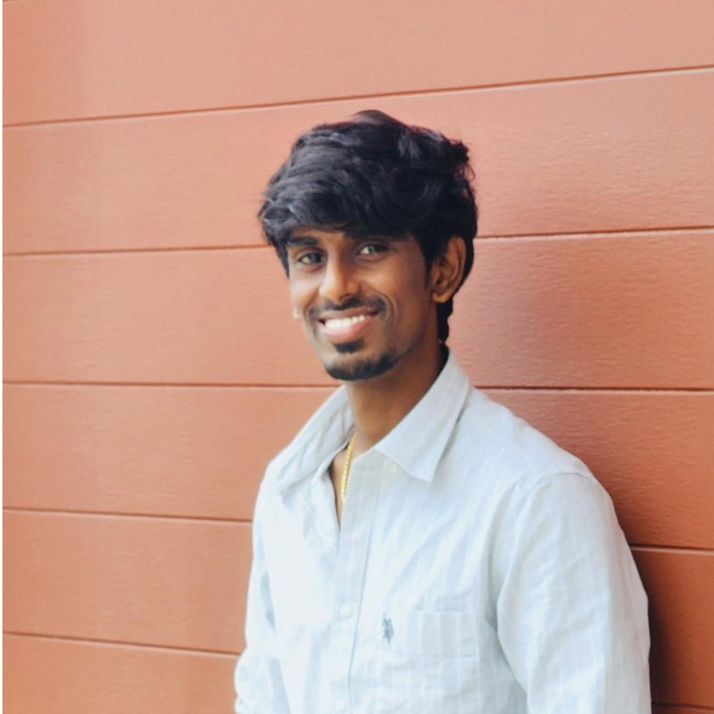

M.Sc. Data Science at FAU Erlangen-Nürnberg. Published researcher in recommender systems. 2.5 years of enterprise data engineering at Kyndryl.

The dual-network architecture from my published recommendation system (NCECA 2023) — the same trained network that powers the live demo. Hover over, or tap, any layer to see what it does.
I care about the full path from raw data to a model someone can trust. At Kyndryl I spent 2.5 years keeping enterprise ETL pipelines running at 99.9% reliability; now at FAU I research recommender systems, machine unlearning, and responsible AI — and I publish what I learn as interactive demos and plain-language writing.